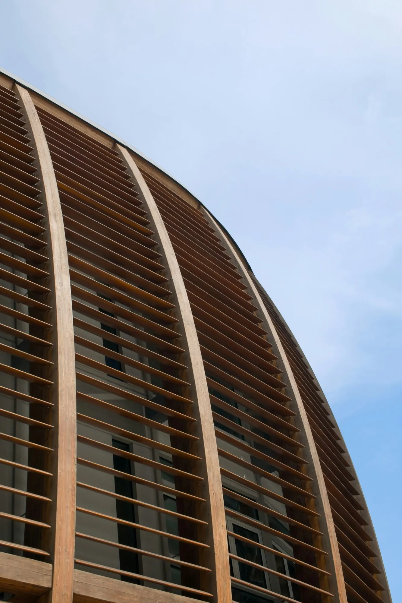
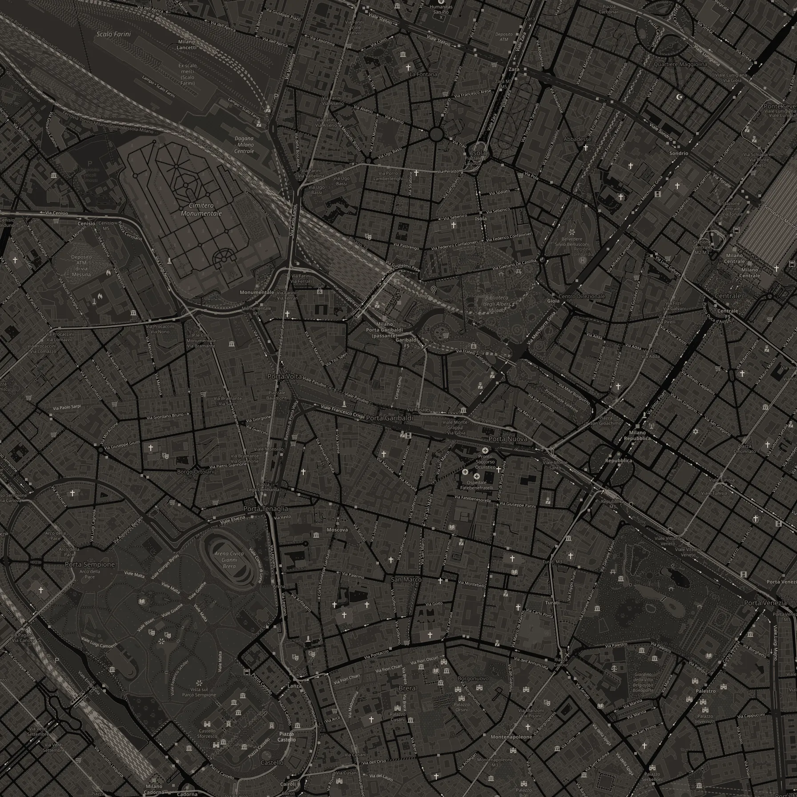
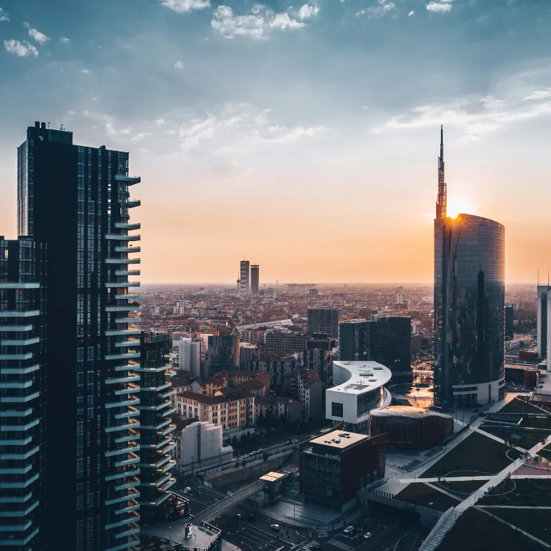
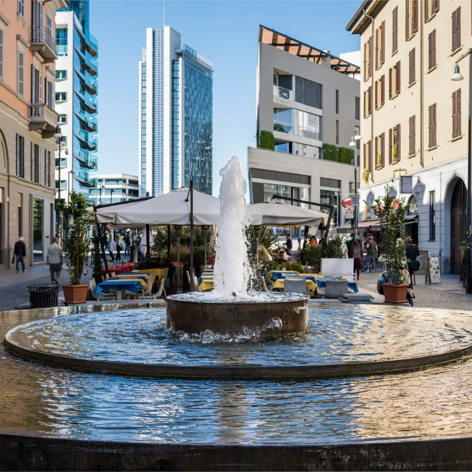
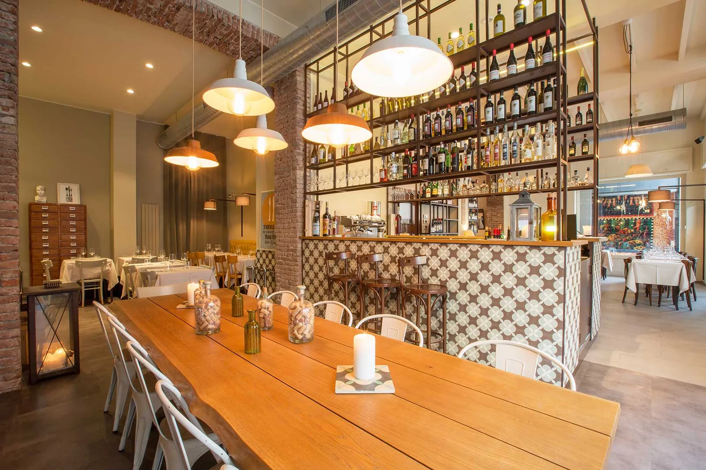

Piazza Gae Aulenti
3 min a piedi
Piazza pedonale sopraelevata progettata da César Pelli e inaugurata nel 2012, al centro di Porta Nuova.
Percorso a piediPorta Nuova non la vedi dalla finestra. Ci esci a piedi.
Corso Como è a un minuto, Piazza Gae Aulenti a tre, il Bosco Verticale a otto. Dormi dentro il quartiere, non alla fermata di metro più vicina.

Dal portone del Tocq, a piedi
Percorsi a piedi calcolati sulle strade (router pedonale OpenStreetMap), dall'ingresso di Via Tocqueville.
Da vedere
3 min a piedi
Piazza pedonale sopraelevata progettata da César Pelli e inaugurata nel 2012, al centro di Porta Nuova.
Percorso a piedi8 min a piedi
Due torri residenziali di Boeri Studio con alberi e arbusti sulle facciate; visibili dall'esterno.
Percorso a piedi5 min a piedi
Parco pubblico tra Porta Nuova e Isola gestito dalla Fondazione Riccardo Catella, con programma culturale gratuito.
Percorso a piedi1 min a piedi
Via pedonale che collega Piazza XXV Aprile alla stazione Garibaldi, con negozi, bar e locali serali.
Percorso a piedi4 min a piedi
Arco neoclassico ottocentesco al centro della piazza, all'inizio di Corso Garibaldi e Corso Como.
Percorso a piedi11 min a piedi
Cimitero ottocentesco con sculture e edicole funerarie; ingresso gratuito, chiuso il lunedì.
Percorso a piedi10 min a piedi
Spazio ibrido socio-culturale nato dall'esperienza della storica Stecca degli Artigiani, sede di una rete di associazioni del quartiere come Temporiuso, Bricheco, la Ciclofficina e il mercato FAME.
Percorso a piedi10 min a piedi
Fondazione attiva dal 2007 per diffondere la cultura della sostenibilità e valorizzare gli spazi pubblici e il verde urbano, con sede in via De Castillia e un giardino pubblico adiacente.
Percorso a piedi9 min a piedi
Associazione che ha trasformato un ex cantiere abbandonato nel primo giardino condiviso (community garden) della città, nel quartiere Isola.
Percorso a piedi11 min a piedi
Edificio in mattoni policromi dello studio Baukuh, costruito tra il 2013 e il 2015 nel quartiere Isola, che ospita associazioni della memoria milanese (ANED, ANPI, Istituto Parri e altre) ed eventi culturali gratuiti.
Percorso a piedi13 min a piedi
Jazz club e ristorante aperto nel 2003 nel quartiere Isola, parte del network internazionale Blue Note.
Percorso a piedi14 min a piedi
Terrazza panoramica a 161 metri al 39° piano di Palazzo Lombardia, da cui si vedono Porta Nuova con il Bosco Verticale e la Torre UniCredit, la Stazione Centrale e il Pirellone.
Percorso a piediDa verificareOrari di Stecca 3.0, Isola Pepe Verde, giardino Catella e Blue Note; calendario delle aperture del Belvedere di Palazzo Lombardia (di norma gratuito e su prenotazione).
La mappa
Scegli un tema, trascina la mappa, tocca un punto.

IsolaPorta NuovaBreraMoscovaPaolo SarpiCentraleMappa © OpenStreetMap contributors
Porta Nuova per chi ci passa qualche giorno

Accenture e Bending Spoons davanti all'hotel, UniCredit a 4 minuti, Microsoft a 5: tutte le sedi con i minuti a piedi.

Dalla colazione alla cena, fra Corso Como, Corso Garibaldi e l'Isola.

10 Corso Como, Eataly, la Feltrinelli e i negozi di Gae Aulenti.
Il quartiere in numeri
Porta Nuova · Tocq Hotel Milano
Prenota sul sito: colazione inclusa, cancellazione gratuita fino a 24 ore prima con Direct Flex.